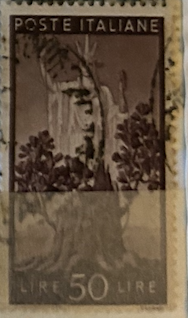
| SOURCE | TITLE| IMAGE MATCH | click to source page |
| postagestampsgalore.co.uk | Italian Stamps | Stamp collecting near me | 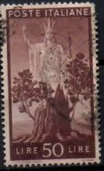 |
| eBay | Italy Trieste Stamp Scott# 68 Overprinted in Black 1950 C426 | eBay | 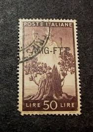 |
| Mercari | 1948 Italy (No.740) | Mercari | 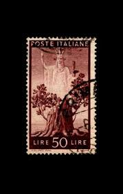 |
| HipStamp | Italy Stamp: Very Old antique used Stamp set #3 Rare- very hard to find. | Europe - Italy, General Issue Stamp / HipStamp | 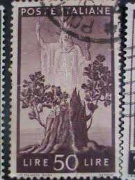 |
| eBay | Tree Stumps | eBay | 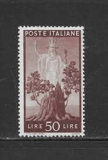 |
| Shutterstock | Italy Circa 1945 Cancelled Postage Stamp Stock Photo 2673329147 | Shutterstock | 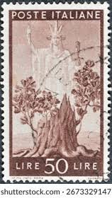 |
| Fandom | Trieste-Zone A 1947 Democracy (Italy Postage Stamps of 1945 Overprinted) | JPP-Stamps Wiki | Fandom | 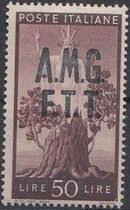 |
| Alamy | ITALY - CIRCA 1945: Postage stamp printed in Italy, shown "Italia" and Sprouting Oak Stump, circa 1945 Stock Photo - Alamy | 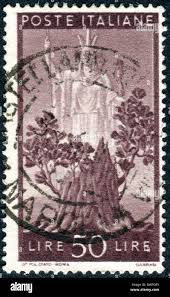 |
| HipStamp | Italy #476 50L "Italia" & Sprouting Oak Stamp | Europe - Italy, General Issue Stamp / HipStamp | 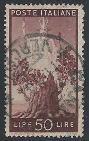 |
| eBay | Italy A.M.G. Scott #1LN11 Mint Light Hinged | eBay | 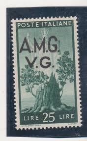 |
| iStock | Surrealist Anthromorphic Tree Stump With Assending Goddess Italian Postage Stamp Stock Photo - Download Image Now - iStock | 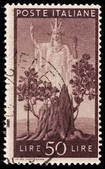 |
| eBay | Francobollo Italia POSTE ITALIANE LIRE 50 usato vintage | eBay | 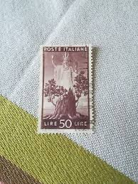 |
| Italy 1945 democracy stamp issue | 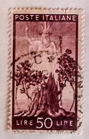 | |
| Dreamstime.com | Postage Stamp Printed in Italy Shows Tree in Bloom and Italy, Democracy Serie, 50 - Italian Lira, Circa 1945 Editorial Photo - Image of 1945, collection: 170684606 | 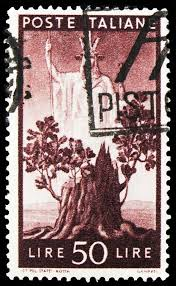 |
| Alamy | Stump oak tree shows tree hi-res stock photography and images - Alamy | 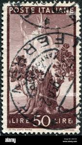 |
| HipStamp | Italy #476 Single | Europe - Italy, General Issue Stamp / HipStamp | 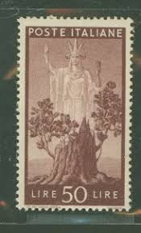 |
| eBay | Italy Politicians Stamps for sale | eBay | 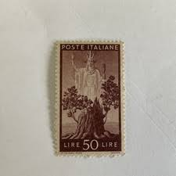 |
| Shutterstock | Italy Circa 1945 Postage Stamp Italy Stock Photo 2107701824 | Shutterstock | 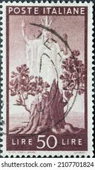 |
| lastdodo.fr | Savona Catalogue de timbre perforés - LastDodo | 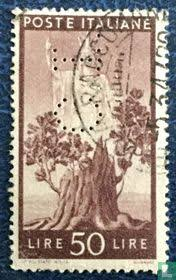 |
| 123RF | This Is A Vintage 1945 Canceled US Postage Stamp Iwo JIma Stock Photo, Picture and Royalty Free Image. Image 3526391. | 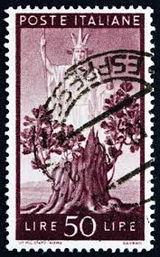 |
| Mezzo Secolo di Repubblica | Democratica – Mezzo Secolo di Repubblica | 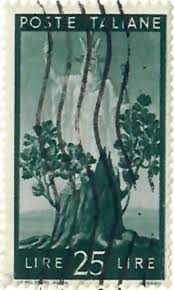 |
| eBay | Trees Italian Stamps for sale | eBay | 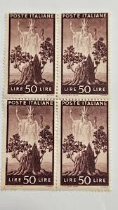 |
| Is it common for stamps to have hidden designs or writing when held up to light? | 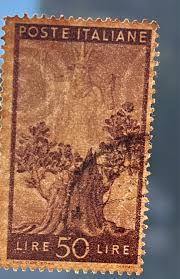 | |
| Alamy | Italy - Stamp Stock Photo - Alamy | 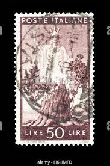 |
| Osta | Itaalia-1945a.,m-703,, puuvaim ,,templiga (123413392) - Osta.ee | 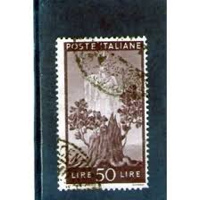 |
| Todocolección | poste italia, 50 lire, la democracia , año 1945 - Buy Antique stamps of Italy on todocoleccion | 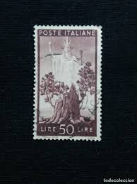 |
| iStock | Italian Postage Stamp Stock Photo - Download Image Now - Italy, Postage Stamp, Antique - iStock | 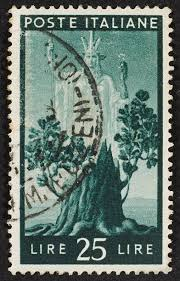 |
| eBay | Italy #1LN11 Mint | eBay | 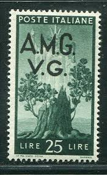 |
| eBay | Italy Occupation of Trieste: 1947 SC # 13 Used, Cat $8 Lot #09-110413 | eBay | 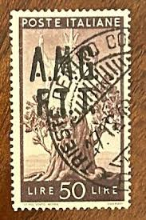 |
| GetArchive | 21 Personifications Of Italia Image: PICRYL - Public Domain Media Search Engine Public Domain Search} | 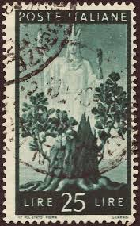 |
| eBay | ITALY, 1945 Peace 50L. Purple, lhm. | eBay | 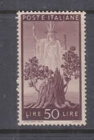 |
| eBay | 3 Italian Postage Stamps Used 1952 1945 1971 Italy Harvest Democracy Campidogio | eBay | 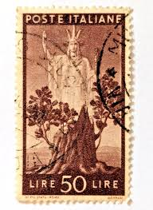 |
| eBay | Italy 476 MNH OG 1945 50L Italia and Sprouting Oak Stump Issue Very Fine | eBay | 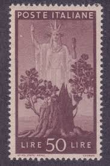 |
| Il Postalista | Varietà di Regno e di Repubblica | 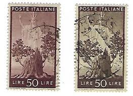 |
| Osta | Leiunurk 1-526 Varia (247316976) - Osta.ee | 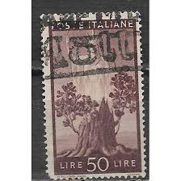 |
| Stamp Auction | Daniel F. Kelleher Auctions, LLC Sale - 631 Page 18 | 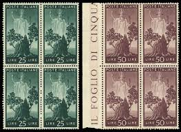 |
| iStock | Postage Stamp Printed In Russia Shows Nikolai Romanov Nicholas Ii The Emperor 1912 Stock Photo - Download Image Now - iStock | 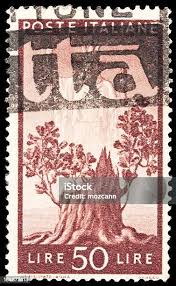 |
| Suomen Filateliapalvelu Oy | Search results for: 'lenovo system 1.69.70.0' | Philatelic Service of Finland | 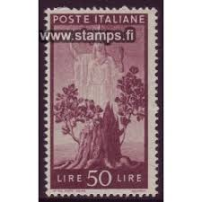 |
| italianstamps.co.uk | Stamps of the Trieste area | 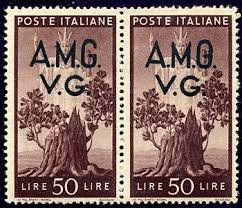 |
| Blogger.com | There's a Newf in My Soup!: PASTA POST! Brown Butter Pasta with Pine Nuts and Fried Eggs | 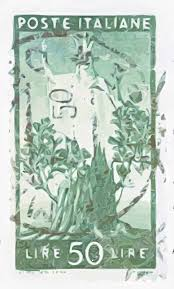 |
| stampsphilately.com | Used Stamps – Page 2 – StampsPhilately | 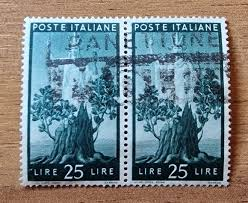 |
| eBay | ITALY Stamp - 1945 New Tree Growing Democracy Sas: 564-SB CTO r36 | eBay | 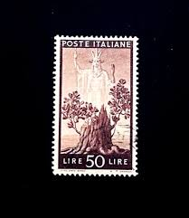 |
| linearcollider.org | Postage Stamps Italy 1985 Automotive Stamps Complete Set - 1912-1915 Six Block MNH Mint Never Hinged 1985 Philately Collection | 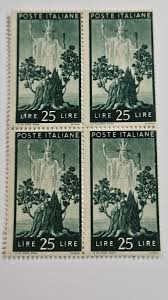 |
| Are designs or writing on stamps when put up to the light common? | 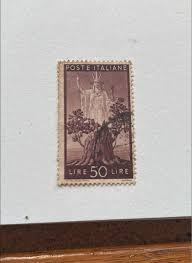 | |
| Todocolección | 1870 - italia - sello de tasa - yvert 6 - Buy Antique stamps of Italy on todocoleccion | 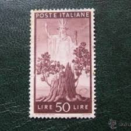 |
| PicClick | ITALY STAMP SC 216, 15c Italia Turrita wmk Inverted, Used F/VF (AS) $8.95 - PicClick | 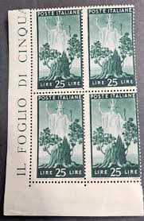 |
| ebid.net | India 1957 SG408 indi24 Map Of India 20np Used Stamp on eBid United Kingdom | 199844399 | 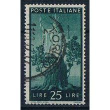 |
| eBay | Italy Stamp Sc476, 50L. Italia & Oak Stump blk of 3 , MNH F/VF CV$ 25.50 (50401) | eBay | 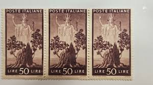 |
| Grosvenor Philatelic Auctions | Historic Sales Summary - Grosvenor Philatelic Auctions : Grosvenor Philatelic Auctions | 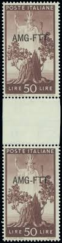 |
| Bob Shop | Italy - 1960 Italia - Olympic Games Giochi 200 L used, stamped was listed for 99.00 on 22 Feb at 11:31 by KHB56 in Johannesburg (ID:634746611) | |
| eBay | 1945 ITALY 2-Stamp Set Used | eBay | |
| eBay | Italian Stamps 20 Lire And 50 Lire - Marked Napoli Ferrovia In 1948 | eBay | |
| eBay | Italy Trieste 1947 50 I OVERPRINT VFU SC 13d | eBay | |
| eBay | Italy - Trieste Zone A - 1947 Democracy - Postage of 1945 Overprinted AMG-FTT | eBay | |
| eBay | ITALY:1945-47 SC#475-76 Used “Italia” and Sprouting Oak Stump AJ1790 | eBay | |
| eBay | ITALY 1945 Stamp Stamps Lot Mi 697-703 | eBay | |
| eBay | Italy 473, 475 - 476 torch, "Italia" Mint Hinged Stamps | eBay | |
| eBay | Italy 475-476 MNH ! scv $ 100 ! see pic ! | eBay | |
| eBay | ITALY SCOTT# 475-6 MNH F-VF LOT# 80373 | eBay |